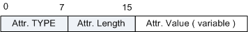

如果BGP报文头中的TYPE为2，则该报文为UPDATE报文。报文头后面所接的报文内容如下（RFC 4271），UPDATE报文用于通告路由。
报文格式

| 字段 | 长度 | 含义 |
|---|---|---|
| Withdrawn Routes Length | 2个字节（无符号位） | 标明Withdrawn Routes部分的长度。其值为零时，表示没有撤销的路由。 |
| Withdrawn Routes | 变长 | 包含要撤销的路由列表，列表中的每个单元包含1字节的Length域和可变长度的Prefix域。
|
| Total Path Attribute Length | 2个字节（无符号位） | 标明Path Attributes部分和Network Layer Reachability Information两部分的长度。其值为零时，表示没有路由及其路由属性要通告。 |
| Path Attributes | 变长 | 包含要更新的路由属性列表，按其类型号从小到大的顺序排序，填写更新的路由的所有属性。每一个属性单元包括属性类型，属性长度，属性值三部分。其编码采用TLV格式。如下所示。 图2 BGP路径属性TLV格式
 其中，Attr.TYPE占2个字节（无符号位），包括1字节的Flags（无符号位）和1字节的Type Code（无符号位）。 图3 TLV结构－Type
Attr.Flags：占1个字节（8个bit），表示属性的标记，其每个bit位的意义如下显示：O: Optional bit, 属性的可选性。决定属性是否为必携带属性。带可选属性（optional）设为1，公认属性（well-known）设为零。 T: Transitive bit 属性的可传递性。对于可选属性，是可传递的设为1，非可传递的设为0。对于公认属性必须设为1。 P: Partial bit 属性的局部性。对于可传递的可选属性是局部的设为1，是完全的设为零。对于非可传递的的可选属性和公认属性，必须设为零。 E: Extended Length bit 决定该属性的长度的字段（即Attr. Length）是否需要扩展。不需要扩展则设为零，Attr. Length占1个字节；需要扩展则设为1，Attr. Length占2个字节。 U: Unused bits 低4位没有使用，发送时必须全部设为零，并且在接收时被忽略。 Attr.Type Code：占1个字节（无符号位），表示属性的类型号。设置如下表2。 Attr.Value：根据不同属性的类型填写不同内容。 |
| Network Layer Reachability Information（NLRI） | 变长 | 包含要更新的地址前缀列表，每一个地址前缀单元由一个LV二元组（prefix length, the prefix of the reachable route）组成，其编码填写方法与Withdrawn Routes的填写方法相同。 |
| 属性类型 | 属性值 |
|---|---|
| 1：Origin | IGP |
| EGP | |
| Incomplete | |
| 2：As_Path | AS_SET |
| AS_SEQUENCE | |
| AS_CONFED_SET | |
| AS_CONFED_SEQUENCE | |
| 3：Next_Hop | 下一跳的IP地址 |
| 4：Multi_Exit_Disc | MED用于判断流量进入AS时的最佳路由 |
| 5：Local_Pref | Local_Pref用于判断流量离开AS时的最佳路由 |
| 6：Atomic_Aggregate | BGP Speaker选择聚合后的路由，而非具体的路由 |
| 7：Aggregator | 发起聚合的路由器ID和AS号 |
| 8：Community | 团体属性 |
| 9：Originator_ID | 反射路由发起者的Router ID |
| 10：Cluster_List | 反射路由经过的反射器列表 |
| 14：MP_REACH_NLRI | 多协议可达NLRI |
| 15：MP_UNREACH_NLRI | 多协议不可达NLRI |
| 16：Extended Communtities | 扩展团体属性 |
报文示例
参考标准
| 标准 | 描述 |
|---|---|
| RFC 827 | Exterior Gateway Protocol (EGP) |
| RFC 2918 | Route Refresh Capability for BGP-4 |
| RFC 4271 | A Border Gateway Protocol 4 (BGP-4) |